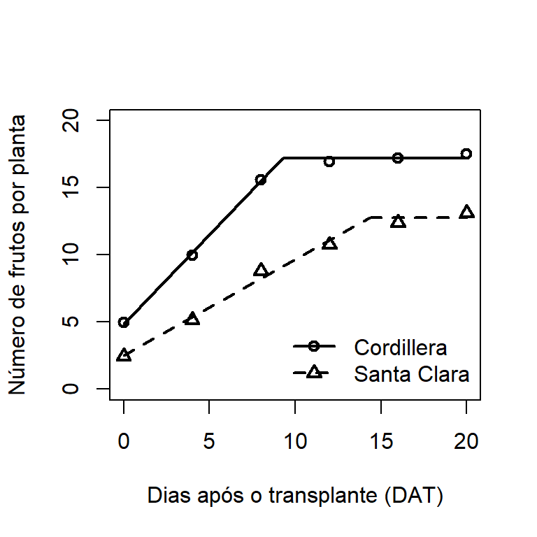
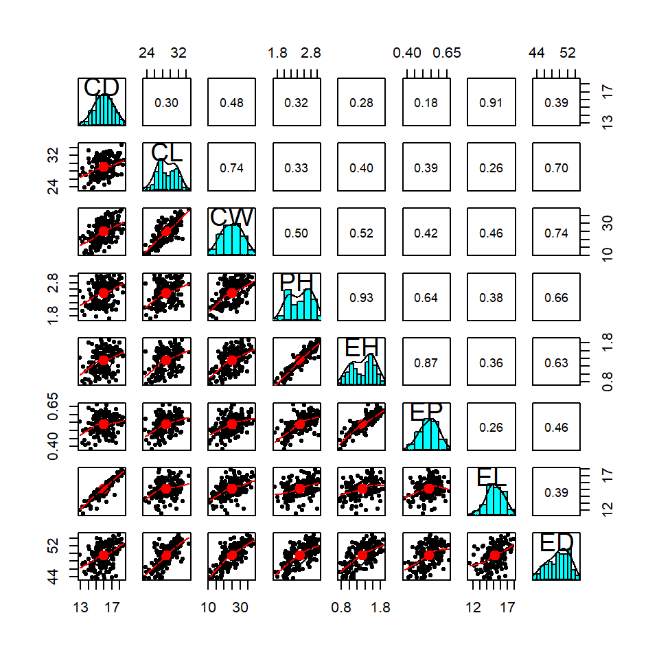
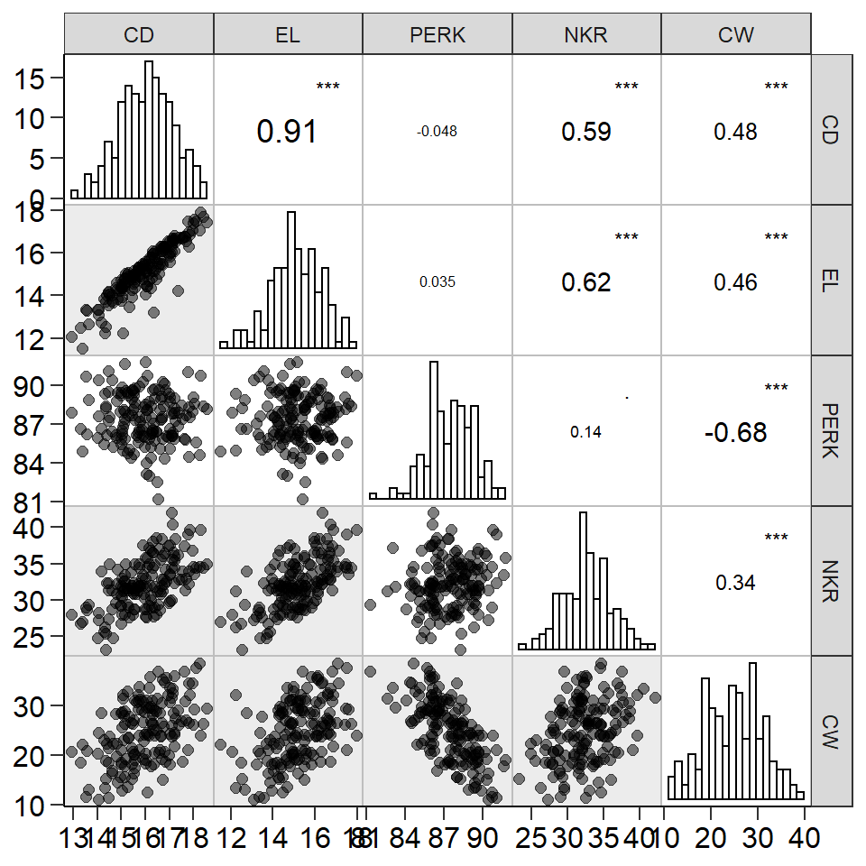
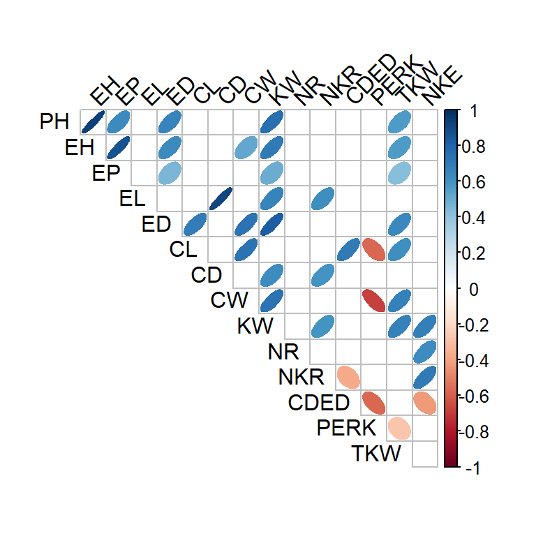

Capítulo 13 Análise multivariada
No melhoramento genético de plantas, diversas variáveis são mensuradas em cada genótipo, visando maior segurança na distinção de tais genótipos. Embora em alguns casos possa fazer sentido isolar cada variável e estudá-la separadamente, geralmente, uma análise que englobe todas as variáveis fornece um maior número de informações. Como todo o conjunto de variáveis é medido em cada genótipo, as variáveis serão relacionadas em maior ou menor grau. Consequentemente, se cada variável é analisada isoladamente, a estrutura completa dos dados pode não ser revelada. A análise multivariada é a análise estatística simultânea de uma coleção de variáveis que utilzia informações sobre as relações entre estas. É muito provável que a análise de cada variável separadamente não revele padrões interessantes que a análise multivariada proporciona.
A concepção da análise multivariada é provavelmente o trabalho realizado por Francis Galton e Karl Pearson no final do século XIX sobre a quantificação da relação entre descendentes e características parentais e o desenvolvimento do coeficiente de correlação (Galton 1888). Naquele tempo, o processamento computacional era muito limitado para suportar o peso das vastas quantidades de aritmética envolvidas na aplicação dos métodos multivariados que estavam sendo propostos. Assim, os desenvolvimentos eram principalmente matemáticos e a pesquisa multivariada era, na época, em grande parte, um ramo de álgebra linear. No entanto, a chegada e rápida expansão do uso de computadores eletrônicos na segunda metade do século XX, levou à crescente aplicação prática dos métodos existentes de análise multivariada, renovando o interesse no desenvolvimento de novas técnicas.
Nos primeiros anos do século XXI, a ampla disponibilidade de computadores pessoais e laptops relativamente baratos e extremamente poderosos, aliados a softwares estatísticos flexíveis fez com que todos os métodos de análise multivariada pudessem ser aplicados rotineiramente, mesmo para grandes conjuntos de dados, como os gerados em um programa de melhoramento genético –por exemplo, dados de marcadores moleculares e sequenciamento gênico.
13.1 Correlações canônicas
Correlações canonicas podem ser computadas utilizando a função can_corr() do pacote metan. O primeiro argumento da função é o conjunto de dados (opcional) que deve conter as variáveis numéricas que serão usadas na estimativa das correlações canônicas. Os grupos de variáveis são definidos pelos argumentos FG (primeiro/menor grupo) e SG (segundo/maior grupo). Por padrão, um diagnótico da multicolinearidade é realizado em cada grupo de variável. No exemplo abaixo, os coeficientes foram armazenados no objeto cc1. Note que o argumento verbose = FALSE foi utilizado para previnir uma longa saída.
cc1 = can_corr(maize,
FG = c(PH, EH, EP),
SG = c(EL, ED, CL, CD, CW, KW, NR),
verbose = FALSE)
print(cc1$Sigtest, digits = 2) Var Percent Sum Corr Lambda Chisq DF p_val
U1V1 0.632 76.2 76 0.79 0.30 181.8 21 0.0000
U2V2 0.187 22.5 99 0.43 0.80 32.5 12 0.0012
U3V3 0.011 1.3 100 0.10 0.99 1.6 5 0.9015Na função can_corr(), os dados também podem ser passados diretamente pelos argumentos FG e SG, por exemplo, FG = maize[, 4:6]. Alternativamente, dados podem ser passados da função split_factors(). Nesse caso, as correlações canônicas serão estimadas para cada nível da variável de agrupamento nessa função.
13.2 Análise de agrupamento
A análise de agrupamento é um procedimento multivariado muito útil no melhoramento de plantas. O princípio básico é agrupar indivíduos (genótipos) de acordo com suas semelhanças (variáveis analizadas). Esta sessão é focada na estimativa de matrizes de distâncias e na implementação de algorítimos aglomerativos de agrupamento hierárquicos para confecção de dendrogramas. A função clustering() do pacote metan será utilizada para este fim.
Existem muitos métodos para calcular as informações de (di)similaridade. As opções incluidas na função são: “euclidean” (padrão), “maximum”, “manhattan”, “canberra”, “binary”, “minkowski”, “pearson”, “kendall” e “spearman”. Estas três últimas são distâncias baseadas em correlação. Para maiores informações veja ?clustering.
13.2.1 Todas as linhas e todas as variáveis numéricas
Por padrão, a função computa as distancias para cada combinação de linhas do conjunto de dados, utilizando todas as variáveis numéricas do conjunto. Isto significa que, considerando o conjunto de dados maize, com 156 observações, 12090 distancias serão computadas baseadas nas 15 variáveis numéricas do conjunto.
13.2.2 Com base na média de cada genótipo
Supondo que o pesquisador deseja computar as distancias entre cada genótipo (o que é lógico em melhoramento genético vegetal) e que esta distancia deve ser computada apenas com algumas variáveis numéricas do conjunto de dados, o seguinte código deverá ser utilizado. Para selecionar as variáveis a serem utilziadas, basta apenas fornecer uma lista de nomes separadas por vírgula e sem o uso do conhecido (e ultrapassado) "". Em adição, para que a distância seja computada entre os genótipos, basta apenas incluir o argumento means_by = GEN. Neste caso, a média de cada genótipo é calculada internamente para cada variável numérica e a distãncia é computada utilizando estas médias. Em adiçãço, a função plot() pode ser usada para plotar um dendrograma. Uma linha é desenhada no ponto de corte sugerido de acordo com Mojena (1977).
d2 = clustering(maize, NKR, TKW, NKE, means_by = GEN)
plot(d2, horiz = FALSE, ylab = "Distância euclidiana")
No dendrograma exibido acima, cada folha corresponde a um genótipo. À medida que subimos na árvore, genótipos que são semelhantes uns aos outros são combinados em ramos, que vão sendo fundidos a uma altura cada vez maior maior. A altura da fusão, fornecida no eixo vertical, indica a (di)similaridade/distância entre dois genótipos. Quanto maior a altura da fusão, menos semelhantes são os genótipos.
Após a confecção do dendrograma , convém avaliar se as distâncias (ou seja, as alturas) na árvore refletem as distâncias originais com precisão. Uma maneira de medir o quão bem o dendrograma gerado reflete seus dados é calcular a correlação entre as distâncias cofenéticas e a matriz de de distância originais. No procedimento anterior o dendrograma não foi mostrado, no entanto, o coeficiente de correlação cofenético foi calculado. Para isto basta incluir o seguinte comando:
[1] 0.8640355Quanto mais próximo o valor do coeficiente de correlação for de 1, mais precisamente o dendrograma refletirá as distâncias originais. Valores acima de 0,75 são considerados bons. O método de ligação “average”, ou UPGMA (padrão na função clustering() parece produzir altos valores dessa estatística. Esta pode ser uma das razões por que ele é tão popular.
13.2.3 Seleção de variáveis
A função clustering() também conta com um algorítimo de seleção de variáveis . O objetivo é selecionar um grupo de variáveis que mais contribuam para explicar a variabilidade dos dados originais. Digamos que se algumas poucas variáveis pudessem ser utilizadas para agrupar os genótipos sem que haja perda de informação, recursos humanos e financeiros poderiam ser poupados. Assim ao envés de avaliarmos 15 variáveis (em nosso exemplo), poderiamos avaliar somente aquelas que realmente contribuiem para a distinção dos genótipos.
O algoritmo de seleção de variáveis é executado quando o argumento selvar = TRUE é incluído na função. A seleção das variáveis é baseada na solução de autovalores/autovetores baseada nos seguintes passos: 1: calcular a matriz de distância e a correlação cofenética com as variáveis originais (todas as variáveis numéricas no conjunto de dados); 2: calcular os autovalores e autovetores da matriz de correlação entre as variáveis; 3: deletar a variável com o maior peso (maior autovetor no menor autovalor); 4: calcular a matriz de distância e correlação cofenética com as variáveis que restaram; 5: calcular a correlação de Mantel entre a matriz de distâncias obtidas e a matriz de distância original; 6: iterar os passos 2 a 5 p - 2 vezes, onde p é o número de variáveis originais. No final das iterações, um resumo dos modelos é retornado. A distância é calculada com as variáveis que geraram o modelo com a maior correlação copenética. Sugerimos uma avaliação criteriosa com o objetivo de escolher um modelo parcimonioso, ou seja, aquele com menor número de variáveis, que apresente correlação cofenética aceitável e alta similaridade com as distâncias originais.
Calculating model 1 with 15 variables. EH excluded in this step (7.1%).
Calculating model 2 with 14 variables. EP excluded in this step (14.3%).
Calculating model 3 with 13 variables. CDED excluded in this step (21.4%).
Calculating model 4 with 12 variables. PH excluded in this step (28.6%).
Calculating model 5 with 11 variables. CL excluded in this step (35.7%).
Calculating model 6 with 10 variables. NR excluded in this step (42.9%).
Calculating model 7 with 9 variables. PERK excluded in this step (50%).
Calculating model 8 with 8 variables. EL excluded in this step (57.1%).
Calculating model 9 with 7 variables. CD excluded in this step (64.3%).
Calculating model 10 with 6 variables. ED excluded in this step (71.4%).
Calculating model 11 with 5 variables. KW excluded in this step (78.6%).
Calculating model 12 with 4 variables. CW excluded in this step (85.7%).
Calculating model 13 with 3 variables. NKR excluded in this step (92.9%).
Calculating model 14 with 2 variables. TKW excluded in this step (100%).
Done!
--------------------------------------------------------------------------
Summary of the adjusted models
--------------------------------------------------------------------------
Model excluded cophenetic remaining cormantel pvmantel
Model 1 - 0.8656190 15 1.0000000 0.000999001
Model 2 EH 0.8656191 14 1.0000000 0.000999001
Model 3 EP 0.8656191 13 1.0000000 0.000999001
Model 4 CDED 0.8656191 12 1.0000000 0.000999001
Model 5 PH 0.8656189 11 1.0000000 0.000999001
Model 6 CL 0.8655939 10 0.9999996 0.000999001
Model 7 NR 0.8656719 9 0.9999982 0.000999001
Model 8 PERK 0.8657259 8 0.9999977 0.000999001
Model 9 EL 0.8657904 7 0.9999972 0.000999001
Model 10 CD 0.8658997 6 0.9999964 0.000999001
Model 11 ED 0.8658274 5 0.9999931 0.000999001
Model 12 KW 0.8643556 4 0.9929266 0.000999001
Model 13 CW 0.8640355 3 0.9927593 0.000999001
Model 14 NKR 0.8648384 2 0.9925396 0.000999001
--------------------------------------------------------------------------
Suggested variables to be used in the analysis
--------------------------------------------------------------------------
The clustering was calculated with the Model 10
The variables included in this model were...
ED CW KW NKR TKW NKE
--------------------------------------------------------------------------A saída acima nos mostra o progresso do algorítmo, indicando qual foi a variável excluída em cada passo. Isto pode ser omitido, indicando verbose = FALSE na função. O resumo do modelo (Summary of the adjusted models) nos fornece duas informações muito úteis. Primeira: ao reduzir o número de variáveis utilziadas na estimativa das distâncias, o coeficiente de correlação cofenético não reduziu significativamente, apresentando variação apenas na terceira casa decimal. A segunda, e talvez mais importante, é a correlação de mantel realizada com a matriz de distâncias em cada passo da análise com a matriz de distâncias inicial, que foi computada com todas as variáveis. Percebe-se que utilizando apenas duas variáveis, as distâncias calculadas foram praticamente idênticas (r = 0.992) às distâncias calculadas com todas as variáveis. Por padrão, o algorítmo estima a matriz de distâncias considerando as variáveis do modelo com maior coeficiente de correlação cofenética. Em nosso exemplo, as variáveis utilizadas foram ED, CW, KW, NKR, TKW, e NKE. Veja que reduzimos em um terço o número de variáveis necessárias para diferenciar os tratamentos, sem perda de informação. Salienta-se, no entanto, que este resultado pode não ser reproduzido em um conjunto de dados diferente, cabendo usuário decidir qual é o melhor modelo a ser utilizado.
13.2.4 Escolha do número de clusters
Um dos problemas com o agrupamento hierárquico é que ele não nos informa quantos clusters existem ou onde cortar o dendrograma para formar os clusters. Você pode cortar a árvore hierárquica a uma determinada altura, digamos, na média das distâncias, no entanto esta decisão é puramente impirica. Por exemplo, se o ponto de corte for muito alto, tendemos a agrupar genótipos que podem, de fato, não ser semelhantes. Um ponto de corte muito baixo, por outro lado, pode resultar em fracassos na seleção, pois consideramos que os genótipos são distintos, podendo não o serem. Procedimentos estatisticos à exemplo de Milligan and Cooper (1985), Scott and Symons (1971), Krzanowski and Lai (1988), Halkidi, Batistakis, and Vazirgiannis (2001) e Hubert and Arabie (1985) são recomendados para esta escolha. Estes algorítimos estão implementados no pacote NbClust (Charrad et al. 2014) pode ser utilizado para este fim. Por padrão, a função fornece o ponto de corte calculado pelo método de Mojena (1977).
Procedimentos baseado em reamostragens bootstrap que calcula a probabilidade de erro de cada galho do dendrograma podem ser utilizados. O código abaixo estima p-valores para cada junção no dendrograma do modelo d3. Para maiore detalhes sobre o métoddo veja Suzuki and Shimodaira (2006).
Bootstrap (r = 0.5)... Done.
Bootstrap (r = 0.5)... Done.
Bootstrap (r = 0.67)... Done.
Bootstrap (r = 0.67)... Done.
Bootstrap (r = 0.83)... Done.
Bootstrap (r = 1.0)... Done.
Bootstrap (r = 1.0)... Done.
Bootstrap (r = 1.17)... Done.
Bootstrap (r = 1.17)... Done.
Bootstrap (r = 1.33)... Done.
O resultado do procedimento bootstrap indicou a formação de dois clusters, com probabilidade de erro de 5%. Assim, nas próximas funções, serão demostrados os diferentes dendrogramas que podem ser gerados
13.2.5 Dendrogramas personalizados
O pacote factoextra oferece um conjunto de funções para estender objetos dendrogramas em R. Um exemplo simples é dado abaixo.
de1 = fviz_dend(d3$hc,
k = 2,
xlab = "Genótipos",
ylab = "Distância euclidiana",
main = "")
de2 = fviz_dend(d3$hc,
k = 2,
type = "circular")
de3 = fviz_dend(d3$hc,
k = 2,
type = "phylogenic",
repel = TRUE)
de4 = fviz_dend(d1$hc,
k = 5,
xlab = "Genótipos",
ylab = "Distância euclidiana",
palette = "jco",
show_labels = FALSE,
main = "")
cp1 = plot_grid(de1, de2, de3, nrow = 1,
labels = c("de1", "de2", "de3"))
plot_grid(cp1, de4, rows = 2, labels = c("", "de4"))
13.2.6 Distancias para cada ambiente
O seguinte código computa as distâncias para cada nível do fator AMB do conjunto de dados maize. A função split_factors() é utilizada para criar uma lista onde cada elemento conterá os dados de cada ambiente. Note que o argumento keep_factors = TRUE foi utilizado para manter as colunas de fatores. Assim é possível computar a média para cada genótipo quando informado o argumento means_by = GEN na função clustering() . O resultado desta função é então passado para a função pairs_mantel(). Esta função é utilizada para avaliar a associação entre as quatro matrizes de distância.
d4 = maize %>%
split_factors(ENV, keep_factors = TRUE) %>%
clustering(NKR, TKW, NKE, means_by = GEN)
pairs_mantel(d4, names = c("A1", "A2", "A3", "A4"),
maxsize = 5, minsize = 3)
13.3 Componentes principais
13.3.1 Conceito
O objetivo básico da análise de componentes principais (Principal Component Analysis, PCA) é descrever a variação em um conjunto de variáveis correlacionadas \(x^T = (x_1, ..., x_q)\), em termos de um novo conjunto de variáveis não correlacionadas, \(y^T = (y_1, ..., y_q)\), onde cada variável é uma combinação linear das variáveis x. As novas variáveis são ordenadas em ordem decrescente de “importância”, no sentido de que \(y_1\) é responsável pelo máximo possível da variação dos dados originais entre todas as combinações lineares de x. Então \(y_2\) é escolhido para explicar o máximo possível da variação restante, sujeito a ser não correlacionado com \(y_1\), e assim por diante. As novas variáveis definidas por este processo, \(y_1, ..., y_q\), são os componentes principais. A principal vantagem da análise de componentes principais é que os primeiros componentes serão responsáveis por uma proporção substancial da variação nas variáveis originais, e podem, conseqüentemente, serem usados para fornecer um resumo de dimensões inferiores dessas variáveis.
13.3.2 Pacotes R
Diversas funções de diferentes pacotes estão disponíveis no software R para realização da PCA, no entanto, a função prcomp() do pacote stats (nativa do R) será utilizada aqui. Para a confecção de biplots e extração dos resultados, funções do pacote factoextra serão utilizadas. O primeiro passo é realizar a instalação e o carregamento do pacote.
13.3.3 Formato dos dados
Para realizar a aplicação da técnica de componentes principais, os dados em data_ge2 serão utilizados. Precisamos, primeiramente, organizar os dados de modo que tenhamos uma matriz de dupla entrada, contendo os genótipos nas linhas e as variáveis nas colunas.
data_pca = data_ge2 %>%
group_by(GEN) %>%
summarise_if(is.numeric, mean)%>%
column_to_rownames("GEN")Em PCA, as variáveis são frequentemente dimensionadas (isto é, padronizadas). Isto é particularmente recomendado quando as variáveis são medidas em diferentes escalas (quilogramas, quilômetros, centímetros, …). Caso contrário, os resultados da PCA podem ser severamente afetados. Geralmente as variáveis são escalonadas para média zero e variáncia unitária, de acordo com a seguinte fórmula.
\[ x_s = \frac{x_i- mean(x)}{sd(x)} \]
onde \(mean(x)\) é a média dos valores de x e \(sd(x)\) é o desvio padrão. A função nativa do R scale() pode ser utilizada para padronizar os dados. Isto pode ser realizado, no entanto, utilizando o argumento scale. = TRUE na função prcomp().
13.3.4 Código R
Para ajudar na interpretação do PCA realizado acima, usaremos funções do pacote factoextra. Essas funções incluem:
get_eigenvalue(res.pca): Extrai os autovalores/variâncias dos componentes principais
fviz_eig(res.pca): Para visualizar os autovalores
get_pca_ind(res.pca), get_pca_var(res.pca): Para extrair os resultados dos genótipos e variáveis, respectivamente.
fviz_pca_ind(res.pca), fviz_pca_var(res.pca): Para visualizar os resultados dos genótipos e variáveis, respectivamente.
fviz_pca_biplot(res.pca): Para confecção de biplots.
13.3.5 Autovalores
Os autovalores medem a quantidade de variância retida por cada componente principal. Autovalores são grandes para os primeiros PCs e pequenos para os PCs subseqüentes. Ou seja, os primeiros PCs correspondem às direções com a quantidade máxima de variação no conjunto de dados. Examinamos os autovalores para determinar o número de componentes principais a serem considerados. Os autovalores e a proporção de variâncias (isto é, informação) retidos pelos componentes principais (PCs) são extraídos usando a função get_eigenvalue().
A soma de todos os autovalores resulta em uma variância total de 15 A proporção de variação explicada por cada autovalor é dada na segunda coluna. Por exemplo, 7.623 dividido por 15 é igual a 0.5082, ou, cerca de 50.82% da variação é explicada por este primeiro autovalor. A porcentagem acumulada explicada é obtida adicionando as proporções sucessivas de variação explicadas. Por exemplo, 50.82% mais 18.13% é igual a 68.95% e assim por diante. Assim, cerca de 59,627% da variação é explicada pelos dois primeiros autovalores.
Um autovalor maior que 1 indica que os componentes principais são responsáveis por mais variâncias do que as contabilizadas por uma das variáveis originais nos dados padronizados. Isso é comumente usado como um ponto de corte para o qual os PCs são mantidos (Kaiser 1961). No entanto, isto vale apenas quando os dados são padronizados.
Infelizmente, não há maneira objetiva bem aceita de decidir quantos componentes principais são suficientes. Em nossa análise, os três primeiros componentes principais explicam 83.62% da variação. Esta é uma percentagem aceitavelmente grande. Um método alternativo para determinar o número de componentes principais é olhar para um Scree Plot, que é o gráfico de autovalores ordenados do maior para o menor. O número de componentes é determinado no ponto, além do qual os autovalores remanescentes são todos relativamente pequenos.
p1 = fviz_eig(res.pca)
p2 = fviz_eig(res.pca,
addlabels = TRUE,
geom = "bar",
barfill = "orange",
barcolor = "black",
xlab = "Componentes Principais",
ylab = "Percentagem da variância explicada",
main = "")
plot_grid(p1, p2)
Figure 13.1: Autovalores e variância acumulada na análise de componentes principais
13.3.6 Gráfico das variáveis
Um método simples para extrair os resultados, para variáveis, de uma saída da função prcomp() é usar a função get_pca_var() . Esta função fornece uma lista de matrizes contendo todos os seguintes resultados:
- coord: coordenadas de variáveis para criar um gráfico de dispersão.
- cos2: representa a qualidade da representação para variáveis no mapa de fatores. É equivalente ao quadrado das coordenadas.
- contrib: contém as contribuições (em percentagem) das variáveis para os componentes principais.
13.3.6.1 Círculo de correlação
A correlação entre uma variável e um componente principal (PC) é usada como as coordenadas da variável no PC. Um gráfico pode ser obtido utilizando a função fviz_pca_var(),
p1 = fviz_pca_var(res.pca)
p2 = fviz_pca_var(res.pca,
col.circle = "red",
xlab = "PCA1 (50,8%)",
ylab = "PCA2 (18,1%)",
geom = c("point", "arrow", "text"),
title = "Gráfico das variáveis",
repel = TRUE) + my_theme()
plot_grid(p1, p2, labels = c("p1", "p2"))
O gráfico acima mostra as relações entre todas as variáveis. Ele pode ser interpretado da seguinte forma:
- Variáveis positivamente correlacionadas são agrupadas.
- Variáveis negativamente correlacionadas são posicionadas em lados opostos da origem do gráfico (quadrantes opostos).
- A distância entre as variáveis e a origem mede a qualidade das variáveis no mapa de fatores. Variáveis que estão longe da origem (próximas ao círculo) estão bem representadas no mapa de fatores.
13.3.6.2 Representação e contribuição das variáveis
A qualidade e a contribuição das variáveis pode ser exibida no mapa de fatores utilizando o argumento col.var = "cos2" e col.var = "contrib", respectivamente. Note que é possível também colorir as variáveis utilizando uma variável categórica. Para fins didáticos criaremos uma variável categórica com três neíveis, baseado no algorítmo kmeans aplicado nas coordenadas das variáveis.
p1 = fviz_pca_var(res.pca,
col.var = "cos2",
geom = c("point", "arrow", "text"),
repel = TRUE)
res.km = kmeans(get_pca_var(res.pca)$coord, centers = 3, nstart = 25)
grp = as.factor(res.km$cluster)
p2 = fviz_pca_var(res.pca,
col.var = grp,
palette = c("green", "blue", "red"),
geom = c("point", "arrow", "text"),
repel = TRUE) +
theme(legend.position = "bottom")
plot_grid(p1, p2, labels = c("p1", "p2"))
13.3.7 Gráfico de indivíduos
Os resultados, para indivíduos, podem ser extraídos usando a função get_pca_ind(). Similarmente ao get_pca_var(), esta função fornece uma lista de matrizes contendo todos os resultados para os indivíduos (coordenadas, correlação entre indivíduos e eixos, quadrado das distâncias e contribuições). A função fviz_pca_ind() é usada para produzir o gráfico de indivíduos.
p1 = fviz_pca_ind(res.pca)
p2 = fviz_pca_ind(res.pca,
pointsize = "cos2",
pointshape = 21,
fill = "#E7B800",
repel = TRUE)
plot_grid(p1, p2, labels = c("p1", "p2"))
13.3.8 Gráfico biplot
Um gráfico biplot combina os marcadores de variáveis e indivíduos em um mesmo gráfico. A função fviz_pca_biplot() é utilizada para gerar este tipo de gráfico. O primeiro biplot (p1) é confeccionado com o exemplo em res.pca. Um exemplo um pouco mais complexo será mostrado utilizando o banco de dados do R iris. Neste exemplo, os indivíduos são coloridos por grupos (cor discreta) e variáveis por suas contribuições para os componentes principais (cores de gradiente). Além disso, alteraremos a transparência das variáveis por suas contribuições usando o argumento alpha.var.
p1 = fviz_pca_biplot(res.pca)
iris.pca <- prcomp(iris[,-5], scale. = TRUE)
p2 = fviz_pca_biplot(iris.pca,
# indivíduos
geom.ind = "point",
fill.ind = iris$Species, col.ind = "black",
pointshape = 21, pointsize = 2,
palette = "jco",
addEllipses = TRUE,
repel = TRUE,
# variáveis
alpha.var ="contrib", col.var = "contrib",
gradient.cols = "RdYlBu",
legend.title = list(fill = "Especies",
color = "Contribuição",
alpha = "Contribuição"))
plot_grid(p1, p2, labels = c("p1", "p2"), rel_widths = c(0.4, 0.6))
13.4 K-means
13.4.1 Conceito
A idéia básica por trás do agrupamento k-means consiste em definir clusters para que a variação total dentro do cluster seja minimizada. Existem vários algoritmos k-means disponíveis. O algoritmo padrão e o mais utilizado é o algoritmo de Hartigan-Wong (Hartigan and Wong 1979), que define a variação total dentro do cluster como a soma das distâncias Euclidianas quadráticas entre os itens e o centróide correspondente. Os passos básicos para a análise são os que seguem:
- Especifique o número de clusters (k) a serem criados;
- Selecione aleatoriamente k objetos do conjunto de dados como os centros de clusters iniciais ou médias;
- Atribua cada observação ao seu centróide mais próximo, com base na distância euclidiana entre o objeto e o centróide;
- Para cada um dos k clusters, atualize o centróide do cluster calculando os novos valores médios de todos os pontos de dados no cluster. O centróide do k-ésimo cluster é um vetor de comprimento p (p = número de variáveis) contendo as médias de todas as variáveis para as observações no k-ésimo cluster;
- Iterativamente, minimize a soma de quadrados total dentro do cluster; isto é, iterar as etapas 3 e 4 até que as atribuições do cluster parem de mudar ou até que o número máximo de iterações sejam atingidas. Por padrão, o software R usa 10 como o valor padrão para o número máximo de iterações.
13.4.2 Pacotes R
Para implementar o método k-means, a função kmeans() do pacote stats (nativa do R) será utilizada. Para a confecção do gráfico, a função fviz_cluster() do pacote factoextra será utilizada.
13.4.3 Formato dos dados e códigos R
O formato dos dados utilizados é o mesmo dos utilizados para realizar a análise de componentes principais. Assim, neste exemplo, somente criaremos um novo conjunto renomeando os dados organizados anteriormente (data_pca) para data_km. O próximo passo é ajustar o modelo k-means e armazenar em um objeto, em nosso exemplo, kmres. Posteriormente, a função fviz_cluster() é utilizada para confeccionar o gráfico.
data_km = data_pca
km.res <- kmeans(data_km, 2, nstart = 25)
p1 = fviz_cluster(km.res, data = data_pca)
p2 = fviz_cluster(km.res,
data = data_pca,
ellipse = TRUE,
main = "",
ellipse.type = "confidence",
ggtheme = theme_metan())+
theme(legend.position = "bottom")
plot_grid(p1, p2, labels = c("p1", "p2"))
References
Charrad, Malika, Nadia Ghazzali, Véronique Boiteau, and Azam Niknafs. 2014. “<b>NbClust</b> : An <i>R</i> Package for Determining the Relevant Number of Clusters in a Data Set.” Journal of Statistical Software 61 (6): 1–36. https://doi.org/10.18637/jss.v061.i06.
Galton, Francis. 1888. “Co-relations and their measurement, chiefly from anthropometric data.” Proceedings of the Royal Society of London 45 (273-279): 135–45. http://rspl.royalsocietypublishing.org/content/45/273-279/135.full.pdf.
Halkidi, Maria, Yannis Batistakis, and Michalis Vazirgiannis. 2001. “On Clustering Validation Techniques.” Journal of Intelligent Information Systems 17 (2/3): 107–45. https://doi.org/10.1023/A:1012801612483.
Hartigan, J. A., and M. A. Wong. 1979. “Algorithm AS 136: A K-Means Clustering Algorithm.” Applied Statistics 28 (1): 100–108. https://doi.org/10.2307/2346830.
Hubert, Lawrence, and Phipps Arabie. 1985. “Comparing partitions.” Journal of Classification 2 (1): 193–218. https://doi.org/10.1007/BF01908075.
Kaiser, Henry F. 1961. “A Note on Guttman’s Lower Bound for the Number of Common Factors.” British Journal of Statistical Psychology 14 (1): 1–2. https://doi.org/10.1111/j.2044-8317.1961.tb00061.x.
Krzanowski, W. J., and Y. T. Lai. 1988. “A Criterion for Determining the Number of Groups in a Data Set Using Sum-of-Squares Clustering.” Biometrics 44 (1): 23–34. https://doi.org/10.2307/2531893.
Milligan, Glenn W., and Martha C. Cooper. 1985. “An examination of procedures for determining the number of clusters in a data set.” Psychometrika 50 (2): 159–79. https://doi.org/10.1007/BF02294245.
Mojena, R. 1977. “Hierarchical grouping methods and stopping rules: an evaluation.” The Computer Journal 20 (4): 359–63. https://doi.org/10.1093/comjnl/20.4.359.
Scott, A. J., and M. J. Symons. 1971. “Clustering Methods Based on Likelihood Ratio Criteria.” Biometrics 27 (2): 387–97. https://doi.org/10.2307/2529003.
Suzuki, R., and H. Shimodaira. 2006. “Pvclust: an R package for assessing the uncertainty in hierarchical clustering.” Bioinformatics 22 (12): 1540–2. https://doi.org/10.1093/bioinformatics/btl117.